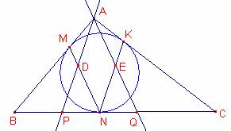

Problema 322
La circumferència inscrita al triangle  és tangent als costats
en els punts M, N, K
respectivament.
és tangent als costats
en els punts M, N, K
respectivament.
La recta paral·lela a NK que passa per A talla MN en
el punt D. La recta paral·lela a MN que passa per A talla NK en E.
Proveu que la recta DE bisecta els costats del triangle  .
.

Solución de Ricard Peiró i Estruch Profesor de Matemáticas del IES 1 de
Xest (València) (en valenciano) :
Per ser M, K punts de tangència
Per ser M, N punts de tangència
Per ser K, N punts de tangència .
Aleshores els triangles , , són isòsceles.
Siga r la recta paral·lela a NK que passa per A.
Aquesta recta talla el costat  en el punt P.
en el punt P.
, són paral·lels,
aleshores els triangles , són semblants.
Aplicant el teorema de Tales:
és a dir,
 ,
,  són paral·lels,
aleshores els triangles , són semblants.
Aplicant el teorema de Tales:
són paral·lels,
aleshores els triangles , són semblants.
Aplicant el teorema de Tales:
és a dir,
 , són paral·lels,
aleshores els triangles , són semblants.
, són paral·lels,
aleshores els triangles , són semblants.
La raó de semblança és:
.
Aleshores E pertany a la paral·lela mitjana del
triangle és a dir a la
paral·lela mitjana del triangle  .
.
Anàlogament D pertany a la paral·lela mitjana de
triangle  .
.